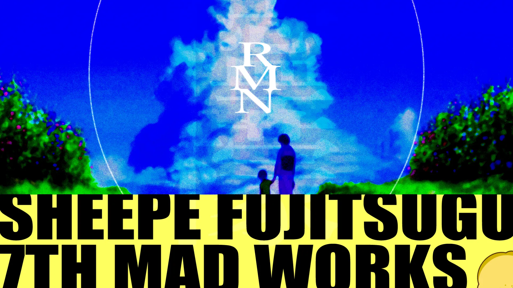
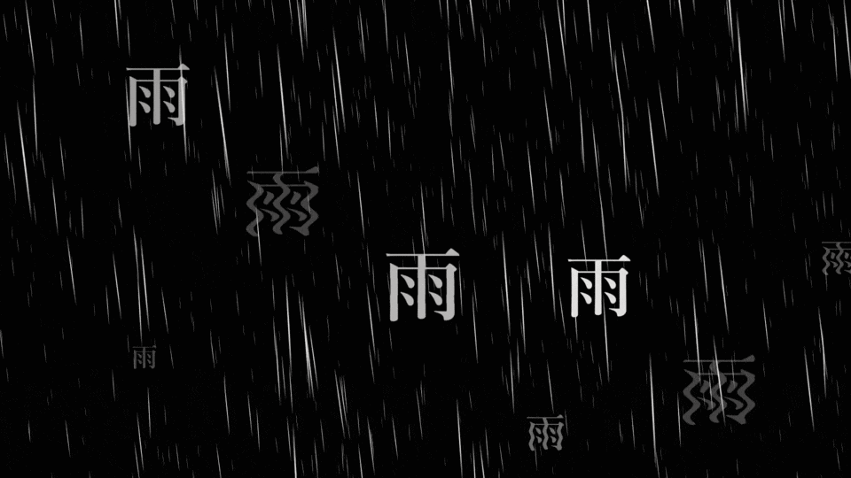
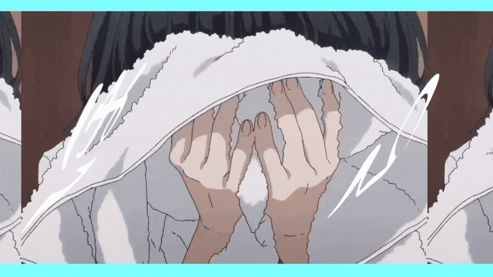

Solo MAD Movie Work
ReMoN - 檸檬 / BURNOUT SYNDROMES
Anime MAD / Text Animation / Motion Graphics / Graphic Design / 3D Camera
2023.5.20 -【複合MAD】「ReMoN」檸檬 / BURNOUT SYNDROMES
コンセプトは「雨」。使用させていただいた楽曲の歌詞とアーティストが掲げている思想にフォーカスし、「雨に打たれている誰かに傘を刺してあげたい」というテーマに設定し構成を考えた。自身のYouTubeチャンネルにてプレミア公開。公開後もたくさんの感動のお声をいただいている。
Production Process
当時は専門学生2年目に差し掛かる頃で、就職活動の真っ只中であった。その中で、「自分と同じように苦しんでいる人が何万人もいるんだ」と感じ、自身も活動を行いながら希望の光のような作品を作ることを決意しプロジェクトが始動。選曲したのは日本のロックバンド「BURNOUT SYNDROMES」の「檸檬」という楽曲。上記の苦しみを「雨」と捉え、雨を晴らすことや傘を刺して雨曝しから救うことを表現することにした。
サムネイル
BURNOUT SYNDROMES 様のアルバム「檸檬」のアルバムジャケットアートワークをパロディしたもの。夏のどこか刹那的な雰囲気を醸し出している。

降り注ぐ雨
「雨」の漢字をアニメーションさせ、だんだんと雨脚が強まっていく様を表現。

リリックとインク
リリックを次々と表示させ、その付近にインクが滴るアニメーションで、キャラクターの表情を見せることで、雨粒に人々の感情が乗っていることを表現。

タイトル
雨脚が強まった末に、まるで小説のカバーのようなタイトルデザインが広がる。

夜空と祈り
アニメーションで夜空とオーロラ、月などを表現。月夜の寒空の下、祈る少女を描いた。

打ち砕く、雨。
「ほら」と可愛げな少女の一声で、あれだけ降り注いだ雨が一気に打ち砕かれる。桜も舞い、光が差す。

音符を傘にして
テキストと図形のアニメーションを傘に見立て、アニメの光芒が差すシーンに合わせて演出。

五線譜を活かして
歌詞そのままを可視化させるのがこのカットにとって最も相応しいと考えた。テキストが音符のように配置されていくアニメーションは、老若男女わかりやすい演出といえるだろう。

芸術は爆発だ
3DCGを使用し、立体的にテキストを動かすことで、「爆発」という言葉通りのインパクトをもたらせている。

重なる表現
単に3Dオブジェクトで表現するだけが空間的デザインではない。それを体現しているのがこのシーンだ。一重で済むかもしれないカットだが、トリミングやマスクを多用し、何重にも重ね、奥行きを演出している。

結論を目立つように
「青春と名付けよう」が1番のメッセージ的な存在。だとすればそれを目立たせるために、あえてデカデカとアニメーションするのではなく、刹那的な表現で落とし込み、綺麗にまとめている工夫のシーンだ。

トランジション
この作品を通して、トランジションを徹底的に綺麗に魅せることを目標としていた。このシーンはそれが顕著に見れる場面だろう。

際立たせる
ラスサビこそ伝えたいメッセージが強くなる場所。だからこそひとつひとつを大切にしっかり魅せている。

表情も大切に
リリックやアニメーションが目立つこの作品だが、だからこそキャラクターの感情、表情、動きも大切に魅せる必要があった。このシーンは特にアニメーションとキャラクターが融合しているシーンだ。

幕引
地球とキスする二人をバックに、この作品の幕を下ろす。

繰り返す表現と、ギャップ
アウトロでは、イントロでのアニメーションをそのまま持ってき、リアレンジを施して作られている。最後の最後に、檸檬のイラストとクレジットで締める。小説らしい終わり方を表現している。
Production Credit
題名 | Title
ReMoN
製作 | Create
Sheepe Fujitsugu
使用楽曲 | Music
檸檬 - BURNOUT SYNDROMES
支援者 | Special Thanks
nochita, コメーズ, Shino(EX-ゆうくんさん), HAKONIWA CREATORSRING, and YOU
製作ツール | Tools
◽️映像 | Movie - AviUtl
◽️サムネイル | Thumbnail - Adobe Illustrator, Photoshop
◽️デザイン | Design - Adobe Illustrator
投稿 | Platform
YouTube
備考 | Notes
※この作品は一切収益化しておりません。